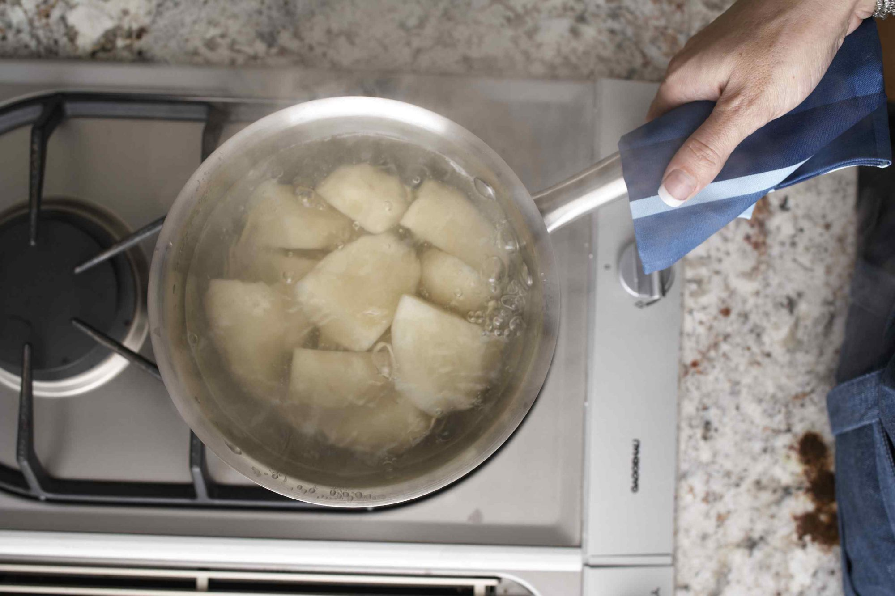

------Ingredients------
- Russet Potatoes
- Butter
- Whole Milk
- Salt and Pepper
------Steps------
- Peel, wash, and cube potatose
- Then put into a big pot with water near potatoe line
- Bring to boil, then let simmer until potatoes soften
- Once cooked, drain with colander and add 1tbps of butter per potatoe, salt, pepper, and .1cup of milk per potatoe.
- Mash and mix until done, tasting as you go.
- Let sit and enjoy!